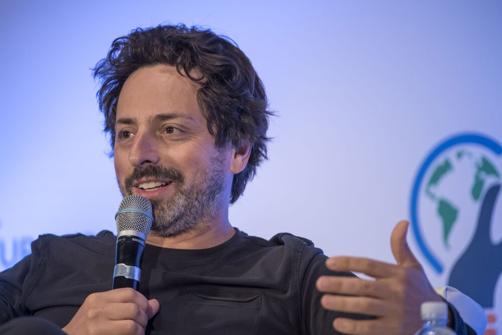

Founder
ラリー・ページ

セルゲイ・ブリン

explanation
Googleは1998年にラリー・ページとセルゲイ・ブリンによって設立され、世界最大のインターネット企業のひとつとして成長しました。最初の検索エンジンから始まり、Gmail、Google Maps、YouTube、Androidなど、革新的なサービスを開発・提供し、人々の日常生活に大きな影響を与えています。 Googleは検索エンジンの成功に加えて、多様な事業分野に進出し、自動運転車、人工知能、医療技術など、未来志向の取り組みにも力を入れています。また、Alphabetという親会社を設立し、さまざまな事業部門を統括する形に移行しました。これにより、Googleは検索だけでなく、多岐にわたるイノベーションとテクノロジーの発展に取り組んでいます。chronology
1998年
ラリー・ページとセルゲイ・ブリンによってGoogleが創設される。
2000年
Google AdWordsが始まる。
2004年
Googleが株式を公開（IPO）。
2006年
YouTubeを買収。
2008年
Chromeウェブブラウザがリリースされる。
2010年
Android Inc.を買収。
2012年
GoogleがGoogle Glassを発表。
2015年
GoogleがAlphabet Inc.を設立。
2016年
Google Assistantが発表される。
2020年
GoogleがGoogle Meetを無料公開。